통계학 전공을 바탕으로 금융 시장 데이터를 분석하고 Python과 Linux 환경에서 데이터 파이프라인을 구축해 왔습니다. 검색 시스템의 품질을 Recall, MRR 같은 지표로 평가하고 시계열 이상 징후를 자동 탐지하는 체계를 설계한 경험이 있습니다. 데이터를 정확하고 빠르게 수집하고 가공하고 배포하는 시스템을 만드는 일에 가장 큰 보람을 느낍니다.
Python을 주력 언어로 데이터 파이프라인, 백엔드 API, 머신러닝 모델을 개발해 왔습니다. PostgreSQL과 TimescaleDB로 대규모 시계열 데이터를 관리하고 복합 JOIN 뷰를 설계했으며 ChromaDB로 벡터 검색 시스템을 구축했습니다. 모든 프로젝트를 Ubuntu Linux 환경에서 진행했고 Docker 컨테이너화와 uWSGI, Nginx 기반 배포를 경험했습니다. C와 C++는 부트캠프 과정에서 기초를 익혔고 Python으로 쌓은 프로그래밍 사고를 바탕으로 빠르게 실무 수준으로 끌어올릴 수 있습니다. Ragas, Recall@5, MRR, BERTScore 등 정량 평가 지표를 설계하고 MLflow로 실험을 추적하는 검증 체계를 갖추고 있습니다. 자본시장 도메인에서는 KRX 시장경보제도 데이터 18,384건을 분석하며 금융 데이터의 정확성 요구사항을 체험으로 이해하게 되었습니다.
석사 연구, 공공기관 연구용역, 개인 및 팀 AI 프로젝트까지 데이터 수집부터 모델 검증까지의 경험을 담았습니다.
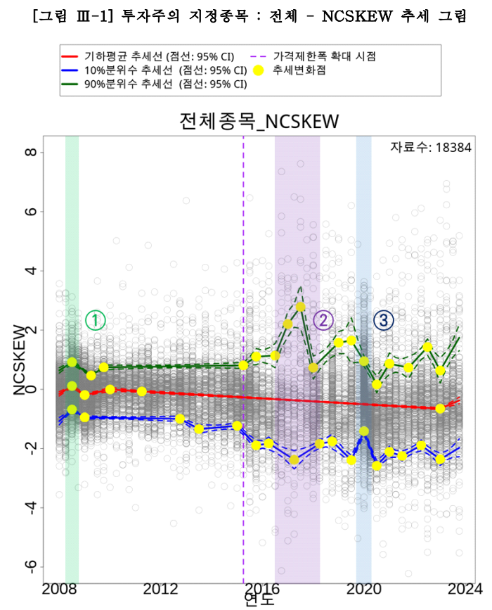
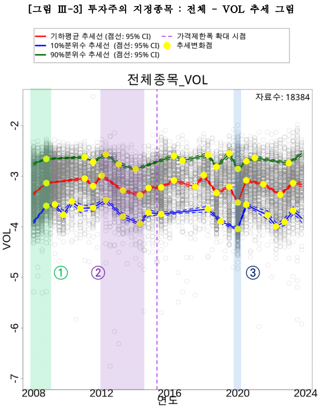
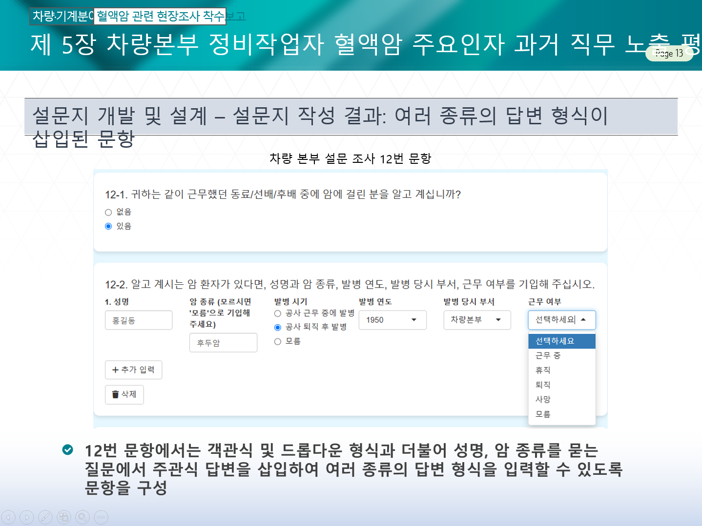
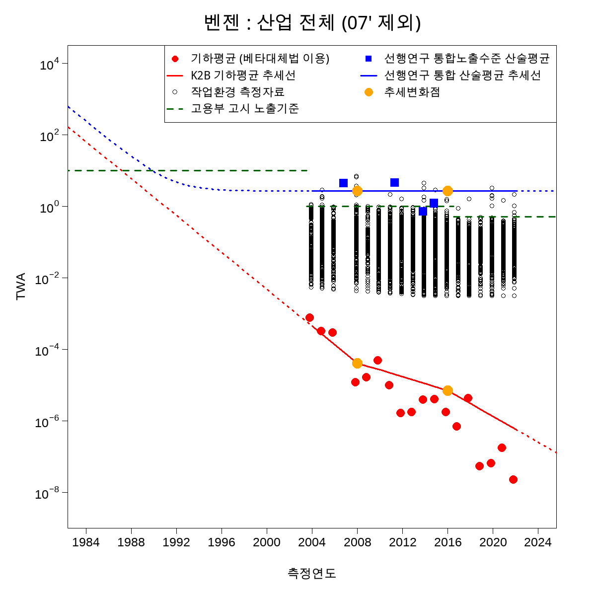
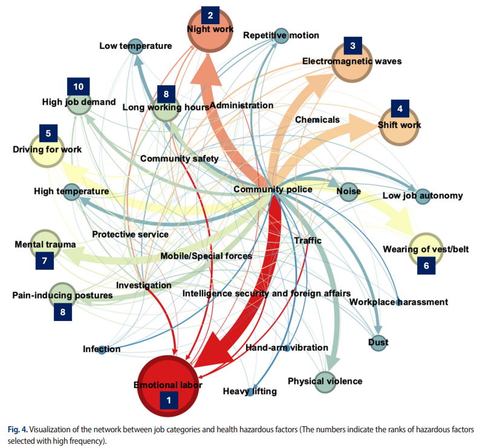
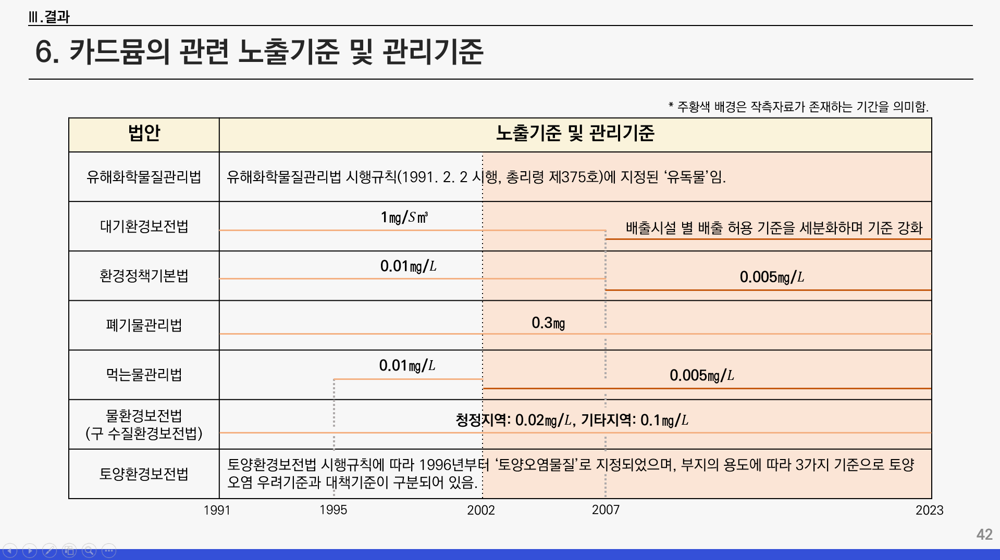
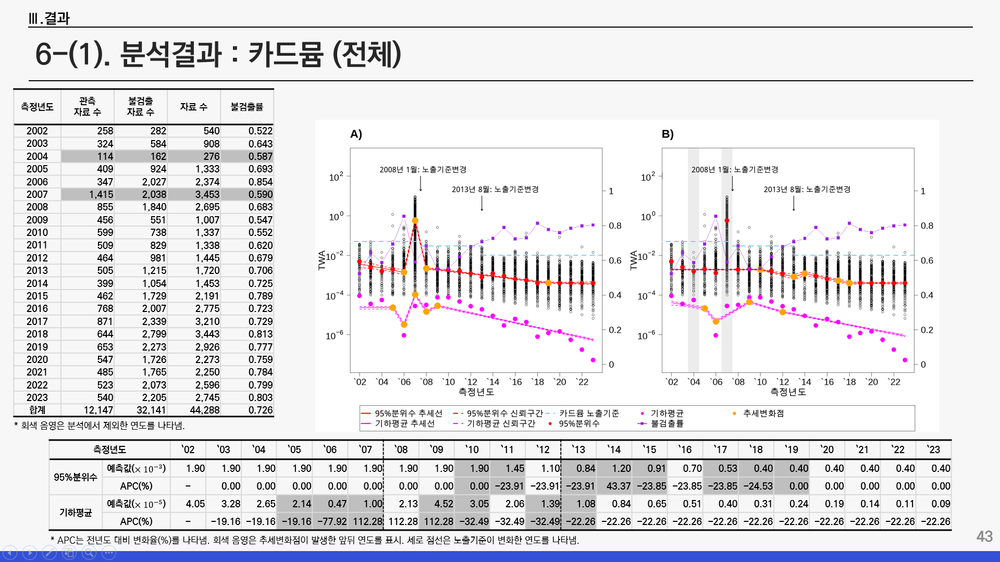
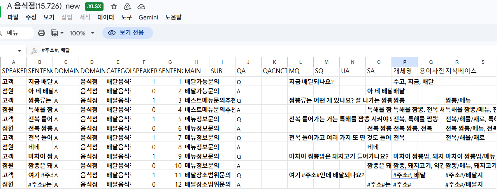
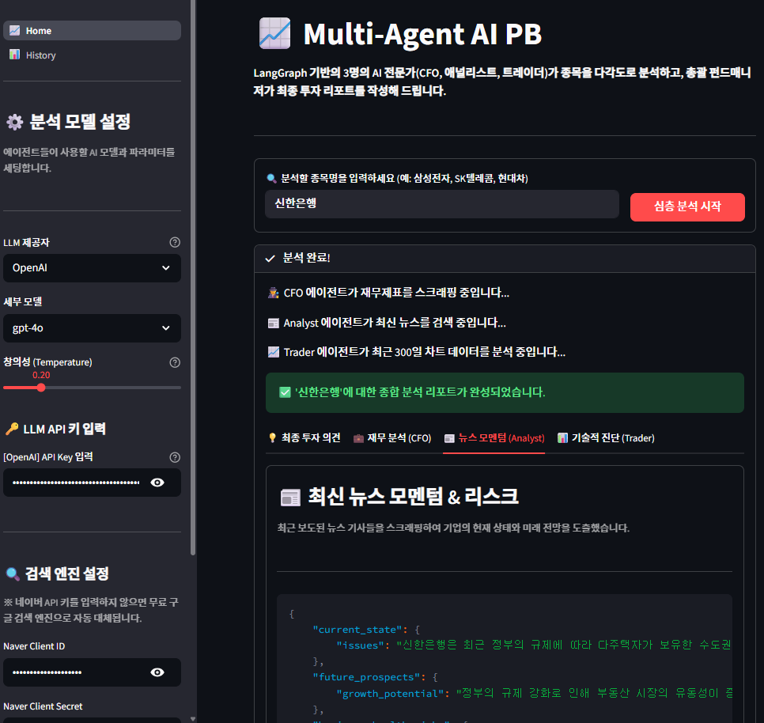
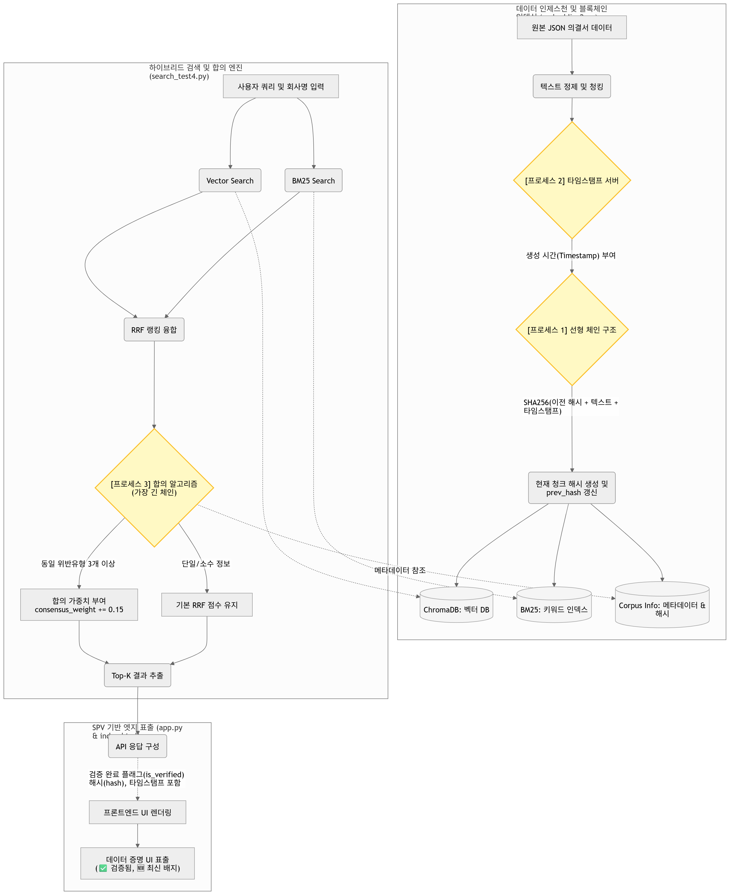
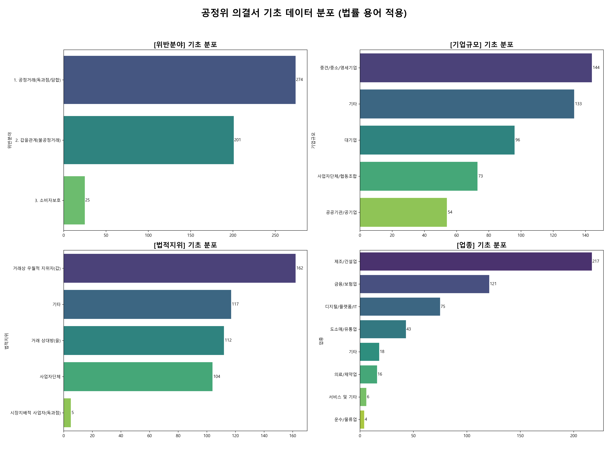
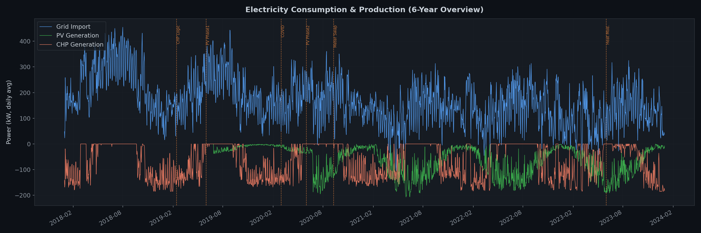